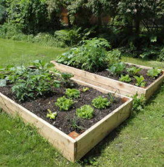
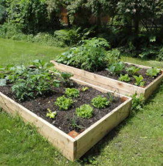

Raised
Raised gardens can be built anywhere and host a number of plants, they are best for beginners. These gardens are great for soil control: you can ensure ground dirt doesn’t interfere with your soil and you can place several different types of soils in a controlled manner. Above ground gardens develop less weeds but are still susceptible to animals.
1. Obtain a trough
2. Place in an outside area with sun exposure
3. Place cardboard covering the entire bottom
4. Place small gardening pebbles atop of cardboard
5. Place soil your filled 75% to the top
 
